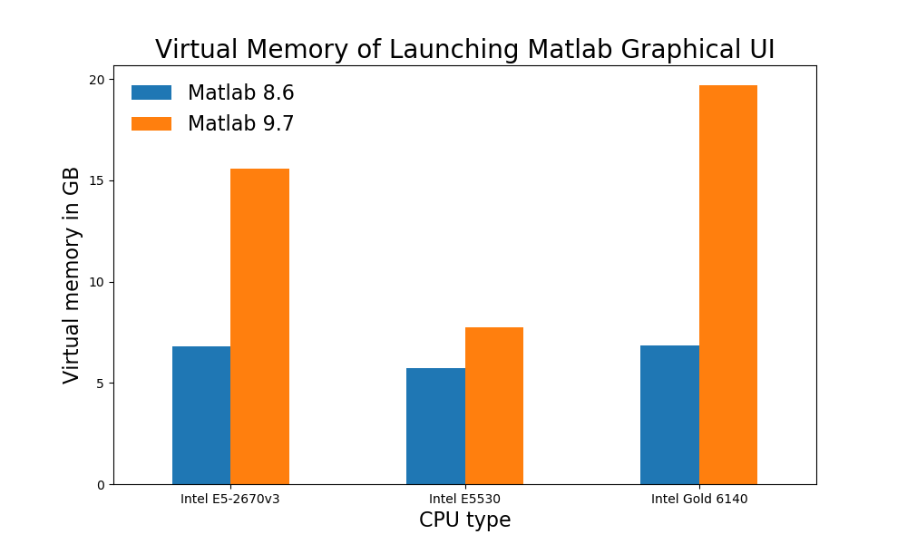
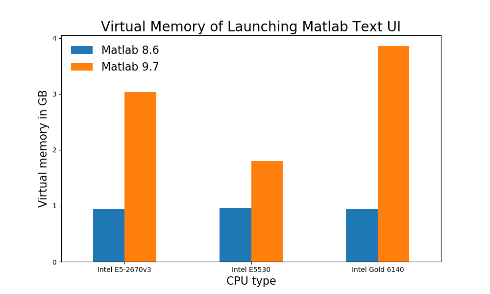

Virtual Memory Consumption of Matlab Graphical User Interface on Hoffman2 Cluster#
2020-06-08
Feb 2022 NOTE: some of the information in this post may be outdated.
In this technical note, We report the virtual
memory consumption when
launching the MATLAB’s graphical user interface (GUI) and text user
interfaces (TUI), respectively, on Hoffman2 Cluster. Currently, Hoffman2
cluster’s job scheduler enforces the virtual memory limit on jobs based
on the value of the job parameter h_data. It is important to set
h_data large enough before launching a Matlab job. When the virtual
memory use exceeds the specified value, the job is terminated instantly.
On the other hand, if h_data is excessively large, it may be difficult
for the scheduler to allocate the required computing resources,
resulting in long (or infinite) wait time. The results, reported below,
will show that launching the graphical user interface consumes
significant more virtual memory than the text user interface. From the
standpoint of conserving virtual memory use, the text-based user
interface should be considered, if possible. All benchmarks reported
below refers to launching only the Matlab interface without loading any
user data. At the time of this writing, there are multiple MATLAB
versions available on Hoffman2 cluster. We focus on Matlab versions 8.6
(R2015b) and 9.7 (R2019b).
Benchmark details#
The benchmarks of virtual memory consumption of launching the MATLAB
user interfaces were performed on selected CPU models. Both the
text-based and the graphical user interfaces were tested. The desired
versions of Matlab were loaded into the environment using the module
commands. The virtual memroy consumption readings were from the top
command.
To load Matlab 8.6, the command was:
$ module load matlab/8.6
$ which matlab
/u/local/apps/matlab/8.6/bin/matlab
To load Matlab 9.7, the command was:
$ module load matlab/9.7
$ which matlab
/u/local/apps/matlab/9.7/bin/matlab
To launch the Matlab graphical user interface, the command was:
$ matlab
To launch the Matlab text user interface, the command was:
$ matlab -nojvm -nodisplay -nosplash
We note that the -nojvm option is key to significantly different
virtual memory consumption between Matlab GUI and TUI.
Results#
The “virtual memroy” column shows the virtual memory consumption for launching the Matlab (without user data).


Summary#
Matlab TUI consumes significantly less virtual memory than its GUI.
Different Matlab versions consume significantly different amount of virtual memory.
Matlab consumes significant different amounts of virtual memory on different CPU models.
Matlab 9.7 GUI consumes significantly more virtual memory than Matlab 8.6 GUI.